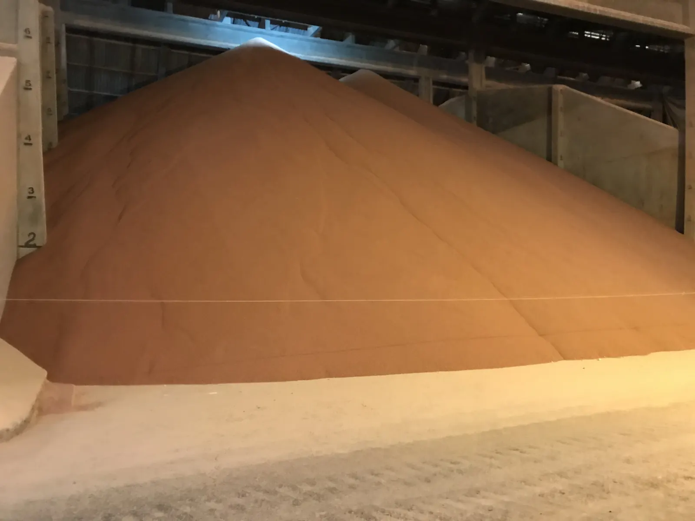
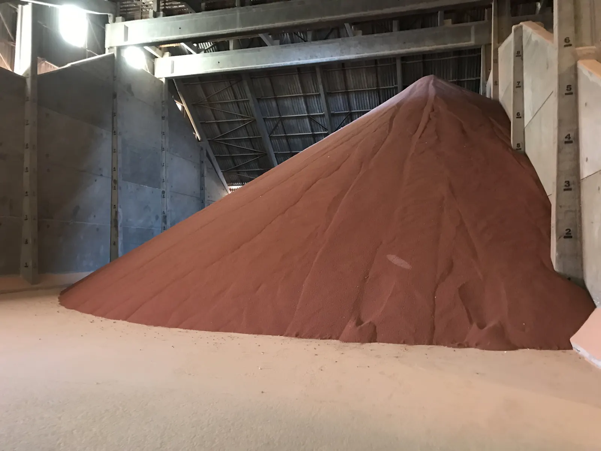
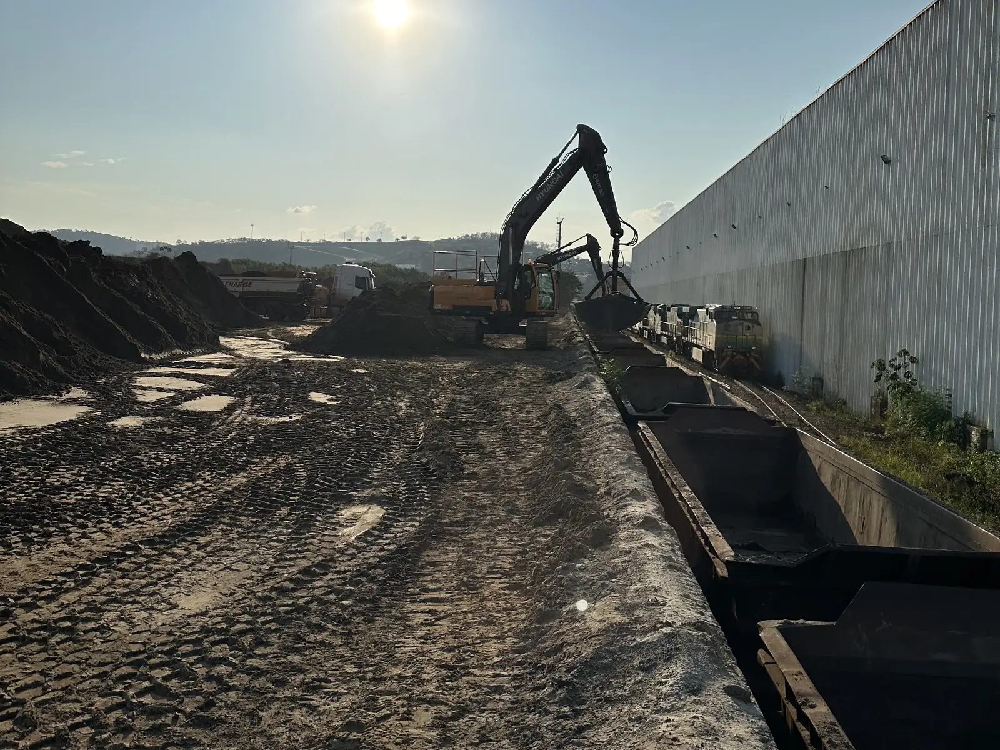
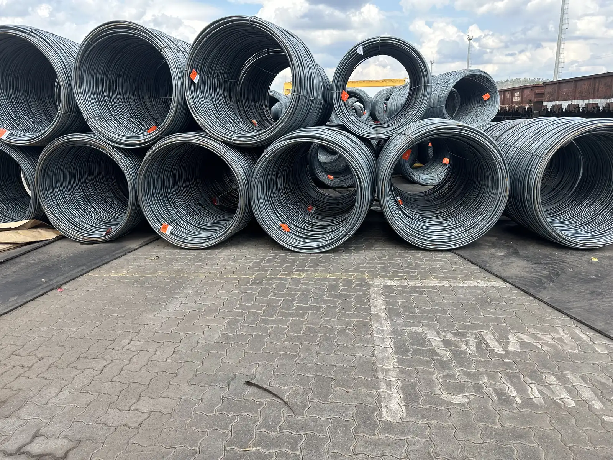

Rota, custo e risco da carga, da origem ao porto.
Granel se decide na logística. Antes de fechar um contrato de compra, venda ou transporte, mostro a conta trecho a trecho, as alternativas e onde está o risco.
- Origemmina, fazenda, usina
- Rodoviacarreta, bitrem, rodotrem
- Terminaltransbordo, armazém, estoque
- Ferroviavagão, janela, tarifa
- Portofila, navio, embarque
Arranjo mais comum no granel de exportação. Há cadeias só rodoviárias, por cabotagem ou por hidrovia, e cada uma muda a conta.
Serviços
Viabilidade e netback de lote ou de fluxo
A conta trecho a trecho, por rota e por cenário de frete e preço. Você sai sabendo o preço mínimo na origem e qual rota vale a pena.
Estudo de rota e modal
Rodovia, ferrovia, cabotagem e porto comparados em custo, prazo, capacidade e risco, com o que confirmar em cotação antes de decidir.
Análise de risco logístico
Dependência de um só operador, capacidade contratada, take-or-pay, sazonalidade, regulação e a saúde de quem está do outro lado.
Estruturação e coordenação da cadeia
Plano logístico com rota, capacidades e contratos, programação de embarque e acompanhamento do fluxo até o navio ou o cliente final.
Apoio local a empresas estrangeiras
Para trading, comprador ou investidor estrangeiro: quem opera cada trecho, onde a carga trava, com quem falar e o que conferir antes de assinar.
Granel e carga industrial
Minério de ferro e manganês, soja, milho e farelo, fertilizantes como KCl e ureia, gusa e produtos siderúrgicos.
Cargas que operei
Fotos dos terminais e das minas onde trabalhei. Cada granel tem o seu jeito de armazenar, carregar e escoar.




O preço na origem é o que sobra depois de cada trecho
Quem compra paga o preço de referência menos tudo o que existe entre a origem e o porão do navio. Quem não conhece cada trecho negocia no escuro.
Etapas do trabalho
- Conversa inicialCarga, origem, destino, volume e prazo. Sem custo.
- Escopo por escritoO que entra, o que não entra, prazo e valor, antes de começar.
- EntregaDossiê ou plano com a conta, as alternativas e o que confirmar.
- AcompanhamentoOpcional, se você quiser que eu coordene a execução.
Planejei por dentro a cadeia de grãos e fertilizantes que vai do porto de Tubarão, pelas ferrovias EFVM e FCA, até terminais no interior de Minas e o cliente final, e a de minério e siderúrgicos para as usinas de Minas.
Perguntas frequentes
Você trabalha só com minério?
Não. Trabalhei com minério, grãos, farelo, fertilizantes, gusa, produtos siderúrgicos e combustíveis. A lógica é a mesma: cada trecho tem custo, prazo, capacidade e dono.
O que é netback?
É o que sobra para a origem depois de pagar cada trecho até o comprador: frete rodoviário, ferrovia, terminal, porto, frete marítimo, tributos e capital de giro. É o preço mínimo que fecha a conta na mina ou na fazenda.
Você contrata o frete ou opera a carga?
Não sou transportador nem agente de carga. Desenho a cadeia, comparo alternativas, coordeno quem opera e acompanho os indicadores do lado de quem tem a carga.
Atende empresa estrangeira?
Sim. Para quem compra, vende ou investe no Brasil de fora, faço o papel de olhos locais: quem opera o quê, onde a carga trava e com quem falar.
Envie os dados da carga para uma primeira avaliação
Produto, origem, destino e volume. Retorno com a leitura inicial e o que precisa ser confirmado.